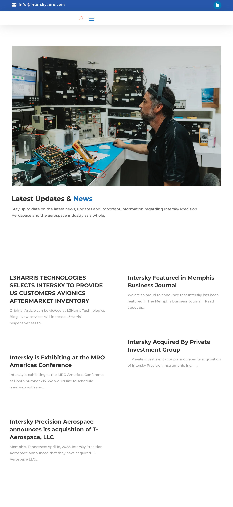
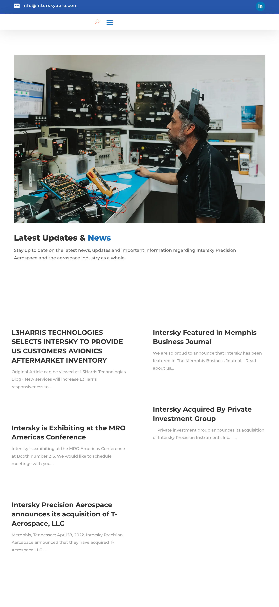

Project Overview
A comprehensive website for Intersky Aerospace, showcasing their aerospace services, calibration solutions, certifications, and rotable inventory. The site features a professional design with easy navigation across multiple service pages.
Website Screenshots

 
